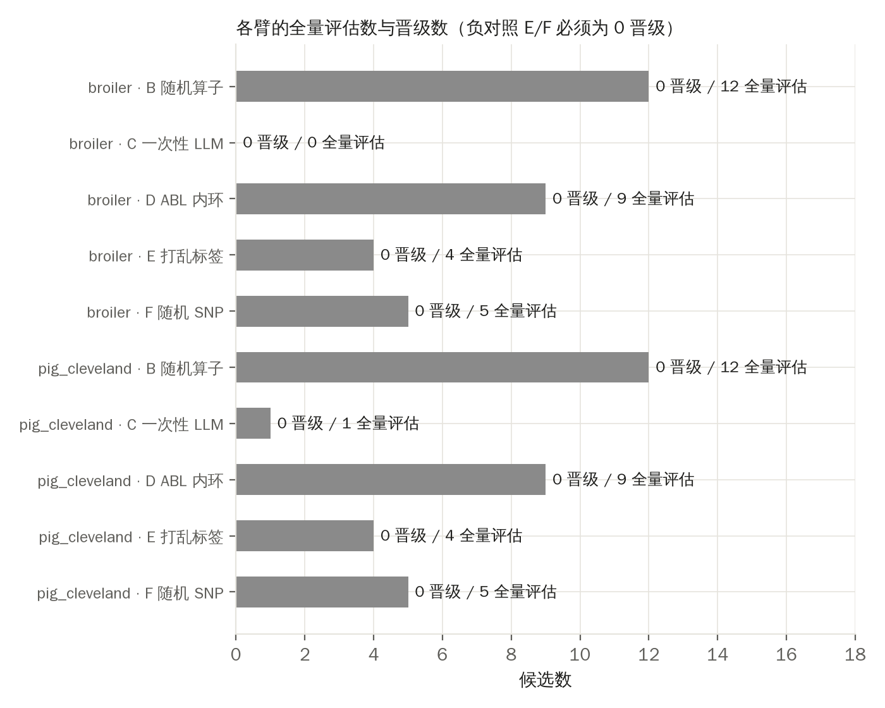
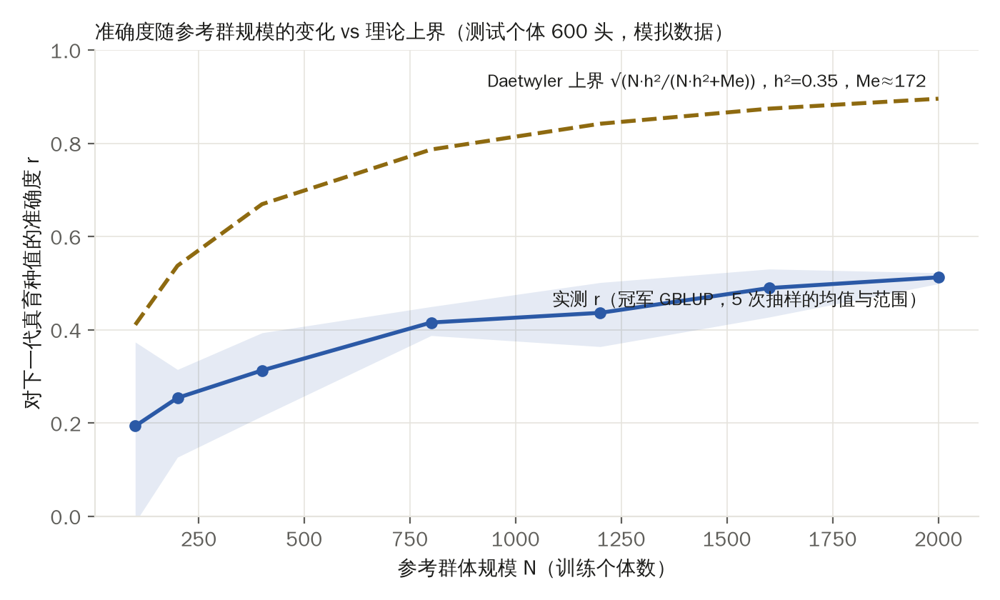
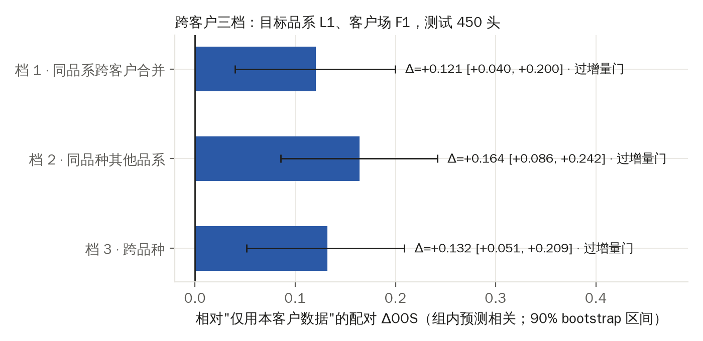
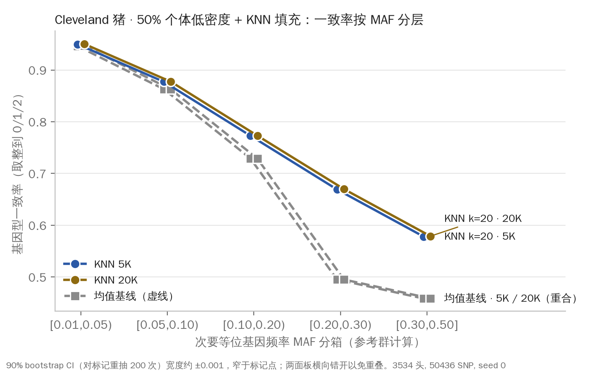
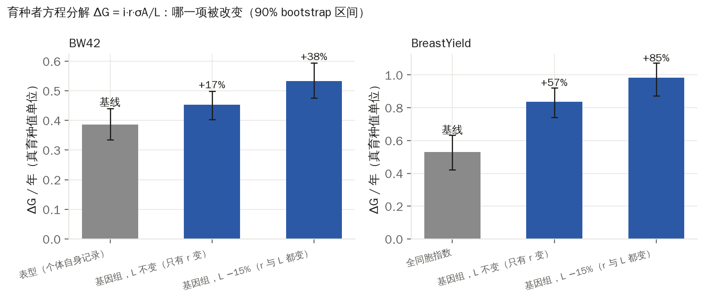

对照 PRD v3 §3 Demo 1 与 P-D1v3。它证明 Deck 上的一句话：我们交付的是一个任何方法都要过的裁判，它已经拒绝了看起来很好的假阳性。生成时间 2026-09-27，种子 0，阈值 sha256 03aced4eec69a752…（开始与结束一致），总时长 39 分钟。数字全部来自 demo1/out/。
| arm | true_accuracy | predictive_r | lr_rho | full_evaluations | promoted | best_delta_oos |
|---|---|---|---|---|---|---|
| A 冠军（冻结 ssGBLUP） | 0.416 | 0.208 | 0.767 | |||
| B 随机算子 | 12 | 0 | 0.011 | |||
| C 一次性 LLM | 0 | 0 | ||||
| D ABL 内环 | 9 | 0 | 0.002 | |||
| E 打乱标签（负对照） | -0.119 | 4 | 0 | 0.003 | ||
| F 随机 SNP（负对照） | 5 | 0 | -0.031 | |||
| G 外部先验（挑战者） | 5 | 0 | 0.001 |

| arm | true_accuracy | predictive_r | lr_rho | full_evaluations | promoted | best_delta_oos |
|---|---|---|---|---|---|---|
| A 冠军（冻结 ssGBLUP） | -0.003 | 0.450 | ||||
| B 随机算子 | 12 | 0 | 0.010 | |||
| C 一次性 LLM | 1 | 0 | -0.000 | |||
| D ABL 内环 | 9 | 0 | 0.009 | |||
| E 打乱标签（负对照） | 4 | 0 | 0.002 | |||
| F 随机 SNP（负对照） | 5 | 0 | 0.014 | |||
| G 外部先验（挑战者）：跳过（no prior in data catalog (see data/SOURCES.md, data/priors/)） |
| dataset | arm | hypotheses | proposals | full_evaluations | promoted | best_delta_oos | best_delta_oos_ci_low | false_promotions_on_negative_controls | critic_reject_rate_on_leak_probes | mechanism_clusters | compute_seconds |
|---|---|---|---|---|---|---|---|---|---|---|---|
| broiler | A | 0 | 0 | 0 | 0 | 0 | 0 | 0 | |||
| broiler | B | 12 | 12 | 12 | 0 | 0.011 | -0.000 | 0 | 1 | 92.800 | |
| broiler | C | 1 | 0 | 0 | 0 | 0 | 0 | 0 | |||
| broiler | D | 100 | 71 | 9 | 0 | 0.002 | -0.003 | 0 | 1 | 12 | 145.200 |
| broiler | E | 20 | 20 | 4 | 0 | 0.003 | -0.001 | 0 | 11 | 37.600 | |
| broiler | F | 5 | 5 | 5 | 0 | -0.031 | -0.057 | 0 | 1 | 12.900 | |
| broiler_G_s0_r20260927T1506 | ? | 6 | 6 | 5 | 0 | 0.001 | -0.004 | 0 | 2 | 13.100 | |
| pig_cleveland | A | 0 | 0 | 0 | 0 | 0 | 0 | 0 | |||
| pig_cleveland | B | 12 | 12 | 12 | 0 | 0.010 | -0.000 | 0 | 1 | 29.600 | |
| pig_cleveland | C | 1 | 1 | 1 | 0 | 0 | -0.002 | 0 | 1 | 2.100 | |
| pig_cleveland | D | 100 | 50 | 9 | 0 | 0.009 | 0 | 0 | 1 | 11 | 43.100 |
| pig_cleveland | E | 20 | 20 | 4 | 0 | 0.002 | 0.000 | 0 | 8 | 22.600 | |
| pig_cleveland | F | 5 | 5 | 5 | 0 | 0.014 | 0.006 | 0 | 1 | 11.600 |

| N | r_mean | r_lo | r_hi | r_sd | bound | n_reps |
|---|---|---|---|---|---|---|
| 100 | 0.194 | -0.013 | 0.374 | 0.170 | 0.411 | 5 |
| 200 | 0.254 | 0.127 | 0.315 | 0.077 | 0.538 | 5 |
| 400 | 0.313 | 0.215 | 0.394 | 0.065 | 0.670 | 5 |
| 800 | 0.416 | 0.388 | 0.450 | 0.026 | 0.787 | 5 |
| 1200 | 0.437 | 0.364 | 0.502 | 0.052 | 0.842 | 5 |
| 1600 | 0.490 | 0.428 | 0.531 | 0.038 | 0.875 | 5 |
| 2000 | 0.513 | 0.499 | 0.523 | 0.010 | 0.896 | 5 |

| tier | n_train | n_test | predictive_r | r_true | delta_oos | delta_ci_low | delta_ci_high | passes_incremental_gate | delta_true_acc | delta_true_acc_ci_low |
|---|---|---|---|---|---|---|---|---|---|---|
| own_customer | 131 | 450 | 0.084 | 0.113 | ||||||
| tier1_same_line_pooled | 386 | 450 | 0.205 | 0.310 | 0.121 | 0.040 | 0.200 | True | 0.196 | 0.122 |
| tier2_same_breed_other_lines | 770 | 450 | 0.248 | 0.404 | 0.164 | 0.086 | 0.242 | True | 0.290 | 0.218 |
| tier3_across_breeds | 1155 | 450 | 0.216 | 0.366 | 0.132 | 0.051 | 0.209 | True | 0.253 | 0.166 |
审查表第 3 行。5K / 20K 随机面板，50% 个体只保留面板位点，KNN 填补；详见 demo1/imputation/RESULT.md。

| panel | method | maf_bin | n_markers | concordance | conc_ci_low | conc_ci_high | r2 | frac_below_0.9 |
|---|---|---|---|---|---|---|---|---|
| 5000 | knn | [0.01,0.05) | 4446 | 0.950 | 0.949 | 0.950 | 0.282 | 0.008 |
| 5000 | knn | [0.05,0.10) | 4338 | 0.877 | 0.877 | 0.878 | 0.312 | 0.776 |
| 5000 | knn | [0.10,0.20) | 8816 | 0.773 | 0.772 | 0.774 | 0.313 | 1 |
| 5000 | knn | [0.20,0.30) | 9302 | 0.669 | 0.669 | 0.670 | 0.320 | 1 |
| 5000 | knn | [0.30,0.50] | 18472 | 0.578 | 0.578 | 0.579 | 0.320 | 1 |
| 5000 | knn | all | 45436 | 0.700 | 0.699 | 0.701 | 0.314 | 0.880 |
| 5000 | mean_baseline | [0.01,0.05) | 4446 | 0.946 | 0.946 | 0.947 | 0.016 | |
| 5000 | mean_baseline | [0.05,0.10) | 4338 | 0.863 | 0.862 | 0.864 | 0.880 | |
| 5000 | mean_baseline | [0.10,0.20) | 8816 | 0.729 | 0.728 | 0.730 | 1 | |
| 5000 | mean_baseline | [0.20,0.30) | 9302 | 0.495 | 0.494 | 0.497 | 1 | |
| 5000 | mean_baseline | [0.30,0.50] | 18472 | 0.458 | 0.458 | 0.459 | 1 | |
| 5000 | mean_baseline | all | 45436 | 0.606 | 0.604 | 0.607 | 0.891 | |
| 20000 | knn | [0.01,0.05) | 2985 | 0.950 | 0.950 | 0.951 | 0.285 | 0.009 |
| 20000 | knn | [0.05,0.10) | 2911 | 0.877 | 0.876 | 0.878 | 0.316 | 0.780 |
| 20000 | knn | [0.10,0.20) | 5917 | 0.773 | 0.772 | 0.774 | 0.315 | 1 |
| 20000 | knn | [0.20,0.30) | 6251 | 0.670 | 0.669 | 0.671 | 0.323 | 1 |
| 20000 | knn | [0.30,0.50] | 12330 | 0.579 | 0.578 | 0.579 | 0.321 | 1 |
| 20000 | knn | all | 30436 | 0.701 | 0.700 | 0.702 | 0.316 | 0.880 |
| 20000 | mean_baseline | [0.01,0.05) | 2985 | 0.947 | 0.946 | 0.947 | 0.014 | |
| 20000 | mean_baseline | [0.05,0.10) | 2911 | 0.863 | 0.862 | 0.863 | 0.885 | |
| 20000 | mean_baseline | [0.10,0.20) | 5917 | 0.729 | 0.728 | 0.730 | 1 | |
| 20000 | mean_baseline | [0.20,0.30) | 6251 | 0.495 | 0.492 | 0.497 | 1 | |
| 20000 | mean_baseline | [0.30,0.50] | 12330 | 0.459 | 0.458 | 0.459 | 1 | |
| 20000 | mean_baseline | all | 30436 | 0.606 | 0.604 | 0.608 | 0.891 |

| trait | scheme | i | r_true | r_true_lo | r_true_hi | r_pred | sigma_A | L_years | dG_per_year | dG_lo | dG_hi | vs_baseline_pct | vs_baseline_lo | vs_baseline_hi |
|---|---|---|---|---|---|---|---|---|---|---|---|---|---|---|
| BW42 | phenotypic_mass_selection | 1.858 | 0.446 | 0.387 | 0.495 | 1 | 0.466 | 1 | 0.386 | 0.334 | 0.440 | 0 | 0 | 0 |
| BW42 | genomic_champion_same_L | 1.858 | 0.523 | 0.478 | 0.571 | 0.241 | 0.466 | 1 | 0.453 | 0.403 | 0.499 | 17.436 | 2.006 | 37.169 |
| BW42 | genomic_champion_shorter_L | 1.858 | 0.523 | 0.475 | 0.561 | 0.241 | 0.466 | 0.850 | 0.533 | 0.476 | 0.594 | 38.160 | 19.922 | 59.615 |
| BreastYield | full_sib_index | 1.858 | 0.406 | 0.330 | 0.485 | 0.343 | 0.703 | 1 | 0.531 | 0.421 | 0.633 | 0 | 0 | 0 |
| BreastYield | genomic_champion_same_L | 1.858 | 0.640 | 0.588 | 0.685 | 0.427 | 0.703 | 1 | 0.836 | 0.742 | 0.922 | 57.499 | 31.150 | 94.163 |
| BreastYield | genomic_champion_shorter_L | 1.858 | 0.640 | 0.598 | 0.682 | 0.427 | 0.703 | 0.850 | 0.983 | 0.871 | 1.072 | 85.293 | 56.888 | 122.389 |
| model | dsl | holdout_n | lr_rho | dispersion_b | predictive_r | delta_predictive_r_vs_champion | true_accuracy |
|---|---|---|---|---|---|---|---|
| champion | champion() | 600 | 0.897 | 0.907 | 0.266 | 0 | 0.507 |
| campaign_id | dsl_text | mechanism_cluster | ΔOOS [90% 下界] | reason |
|---|---|---|---|---|
| broiler_B_s0_r20260927T1506 | champion() + region_weight(chrom=3, weight=2.84) | random_ops | +0.0110 [-0.0004] | failed gates: accuracy, incremental, research |
| broiler_B_s0_r20260927T1506 | champion() + qtl_prior(source='sim_noisy_qtl_prior', weight=3.38) + region_weight(chrom=5, weight=1.9) | random_ops | +0.0042 [-0.0097] | failed gates: incremental, robustness, research |
| broiler_B_s0_r20260927T1506 | champion() + lambda_scale(factor=1.53) | random_ops | +0.0015 [-0.0015] | failed gates: accuracy, incremental, plan, research |
| broiler_B_s0_r20260927T1506 | champion() + blend_pedigree(w=0.12) + lambda_scale(factor=1.23) | random_ops | +0.0011 [-0.0013] | failed gates: accuracy, incremental, plan, robustness, research |
| broiler_B_s0_r20260927T1506 | champion() + qtl_prior(source='sim_noisy_qtl_prior', weight=0.06) + region_weight(chrom=1, weight=0.82) | random_ops | +0.0008 [-0.0009] | failed gates: incremental, robustness, research |
| broiler_B_s0_r20260927T1506 | champion() + blend_pedigree(w=0.18) | random_ops | +0.0003 [-0.0024] | failed gates: incremental, robustness, research |
| broiler_B_s0_r20260927T1506 | champion() + blend_pedigree(w=0.06) + covariate(field='line') | random_ops | +0.0000 [-0.0001] | failed gates: incremental, robustness, research |
| broiler_B_s0_r20260927T1506 | champion() + covariate(field='farm') + qtl_prior(source='random_prior', weight=0.52) | random_ops | -0.0025 [-0.0057] | failed gates: incremental, plan, robustness, research |
| broiler_B_s0_r20260927T1506 | champion() + dominance(w=0.17) + lambda_scale(factor=0.72) | random_ops | -0.0041 [-0.0140] | failed gates: incremental, plan, robustness, research |
| broiler_B_s0_r20260927T1506 | champion() + grm_weights(scheme='maf_inverse') | random_ops | -0.0055 [-0.0162] | failed gates: incremental, plan, robustness, research |
| broiler_B_s0_r20260927T1506 | champion() + qtl_prior(source='random_prior', weight=0.18) + snp_subset(fraction=0.82, seed=903769, strategy='random') | random_ops | -0.0195 [-0.0304] | failed gates: incremental, plan, robustness, research |
| broiler_B_s0_r20260927T1506 | champion() + dominance(w=0.27) + region_weight(chrom=2, weight=4.41) | random_ops | -0.0410 [-0.0612] | failed gates: incremental, plan, robustness, research |
THEORY.md（审查表行 1、2、3、4、5、6、7、12 的检验与结果）· CLAIMS.md（可以说 / 不能说 / 需要什么数据）· RUN.json（种子、数据哈希、阈值哈希、时长、带宽）。